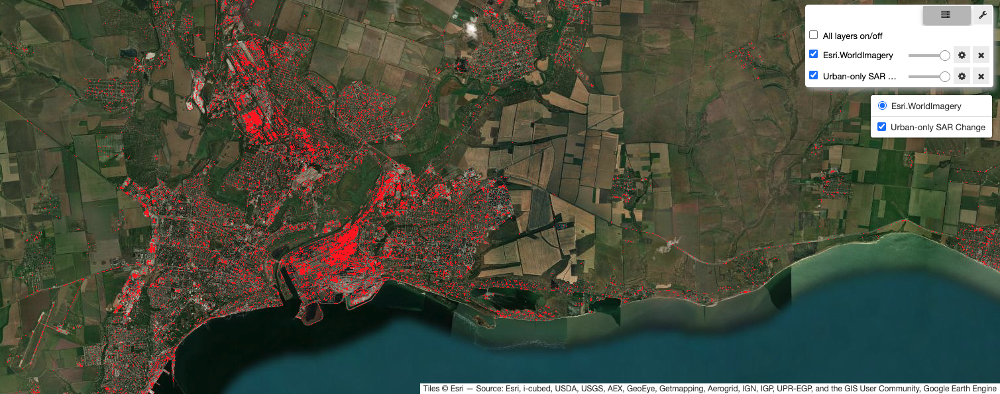
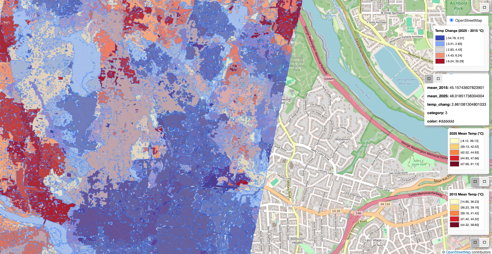

Ukraine
Wartime change detection from SAR imagery

Wartime change detection from SAR imagery

Urban heat island analysis

Leak detection and reuse analysis

Participatory mapping software evaluation plug-in

SAR reforestation and clearing change detection

Open course materials

Leaflet-based mapping projects
These projects are built on open Earth observation data and Python geospatial libraries, with reproducible code. Each tile links to a GitHub repository with documentation and setup instructions. Some require credentials to access restricted data or APIs.